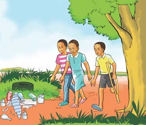
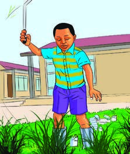

A friendly cat guide introduces the next learning activity.
I avoid dangerous objects to protect my health and life.
1Picture 1

We avoid dangerous objects to be safe.There is a pupil walking carefully away from litter and dangerous objects with other pupils.2Picture 2

I avoid dangerous objects by wearing strong boots and cleaning the environment.There is a pupil who wears strong shoes and uses a suitable tool to avoid injury while cleaning.